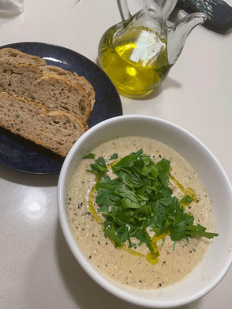

Cauliflower Blue Cheese Soup - Hearty French Soup Recipe

I have to admit, I was never the biggest fan of blue cheese until I dipped a chicken wing in some blue cheese sauce!
I was at my local supermarket, and something jumped out at me in the cheese section - half price blue cheese
I quickly remembered I had a leek, home-made chicken stock and a big old cauliflower and milk at home that needed to be used up
In that moment I had an incredible idea for dinner!
I was certainly not the first person to think of this - but if you looking for a rich French style soup on a cold night would highly recommend!
Ingredients
- 1 large leek (or 1 white onion) - cut into small pieces
- [OPTIONAL] Small chunk of 'Speck' (or bacon) cut into lardons/small cubes
- Butter
- 1 half cauliflower
- Chicken Stock
- Milk
- Cooking Cream
- Small portion of blue cheese
- Olive oil (for cooking + finishing)
- Parsley (for finishing)
- Rustic bread to serve with
>
Instructions
- Cut up cauliflower into large pieces and put into a large baking dish at a high heat with olive oil + salt
- In a large pot - render down speck/lardons (or bacon) until crispy + fat renders
- Add the leek to the pot with some butter and sweat down on a reduced heat
- Add chicken stock when this starts to dry out - scrape the fond from the bottom
- After 20-25mins the cauliflower should be starting to char, depending on your oven - this is key part of developing the flavour
- Add the roasted cauliflower + milk + blue cheese to the pot - slightly submerging the cauliflower + cheese
- Give the cheese time to melt in the boiling liquid and the cauliflower to fall apart
- When the cheese + milk form a homogenous mixture use an immersion blender to blitz the cauliflower/leek/pork
- Based on how creamy your current mixture is, add a dolop of cream using your intuition
- Once everything is well combined - serve in a bowl topped with diced parsley, olive oil and toasted bread